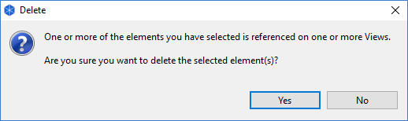
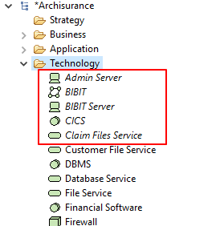
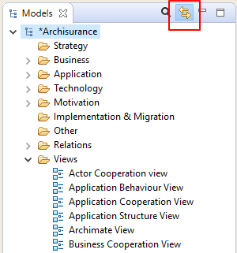

Pour supprimer un ou plusieurs éléments dans l'arborescence des modèles, sélectionnez-les puis choisissez "Supprimer" dans le menu principal "Modification" ou dans la barre d'outil principale.
Notez que si un élément que vous souhaitez supprimer apparaît dans une ou plusieurs vues, vous serez averti qu'li est référencé dans ces vues. Si vous supprimez ensuite l'élément dans l'arborescence, vous le supprimerez également de toutes les vues dans lesquelles il est référencé.
Avertissement quant à la suppression d'un élément
Pour renommer un élément ou une relation dans l'arborescence des modèles, choisissez "Renommer" dans le menu principal de modification ou dans le menu contextuel obtenu par clic droit. Vous pouvez également le renommer dans la fenêtre des propriétés.
Pour dupliquer des éléments ou des vues dans l'arborescence des modèles, choisissez "Dupliquer" dans le menu principal "Modification" ou dans le menu contextuel obtenu par clic droit. Notez que les vues dupliquées contiennent des références aux éléments copiés originaux.
Pour modifier les propriétés d'un élément sélectionné ou d'une relation dans l'arborescence des modèles, choisissez le noeud de l'arborescence et ouvrez la fenêtre des propriétés soit en double cliquant le noeud de l'arborescence, soit via le menu principal "Fenêtre" ou soit la barre d'outils principale.
Chaque élément de l'arborescence des modèles possèdes des propriétés différentes qui peuvent être définies ou consultées dans la fenêtre des propriétés. Pour plus d'information, voir la section la fenêtre des propriétés.
Note : certaines propriétés ne peuvent être modifiées que lorsque l'élément est sélectionné dans une vue (par exemple la couleur de remplissage, la police de caractères ou l'épaisseur des traits).
Les élément dans l'arborescence des modèles peuvent être ajoutés à autant de vues de diagramme du modèle que souhaité en les tirant sur le canevas des vues (voir la section "Vues"). Quand un élément a été ajouté ou est utilisé dans une vue, la police de caractères utilisée dans l'arborescence des modèles pour cet élément est normale. Cependant, si l'élément n'existe que dans l'arborescence du modèle et n'est utilisé dans acune des vues, il est affiché avec une police de caractères en italique:
La police de caractères en italique indique les éléments qui ne sont pas utilisés dans les vues
Ceci permet de voir facilement les éléments qui pourraient être devenus superflus et peuvent être supprimés.
Quand on sélectionne des éléments dans l'arborescence
Quand on sélectionne des éléments dans l'arborescence des modèles et dans des vues de diagramme, il est parfois utile de synchroniser la sélection entre les éléments des deux fenêtres. En cliquer sur le bouton "Lier à la vue" dans l'arborescence du modèle active ou désactive la synchronisation des éléments sélectionnés entre l'arborescence du modèle et un diagramme:
Le bouton "Lier à la vue"
Ce bouton est un commutateur et peut être désactivé ou activé.
La sélection synchronisée est possible sur plus d'un élément sélectionné.
Notez qu'une sélection synchronisée n'est possible que si une vue pertinente est ouverte. Sélectionner un élément dans l'arborescence des modèles ne se synchronisera pas dans une vue si cette vue ne contient pas ce ou ces éléments particuliers/